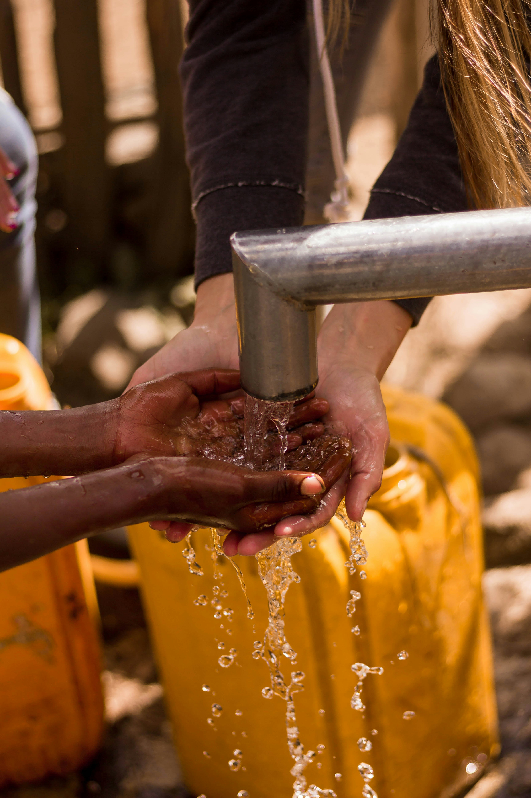
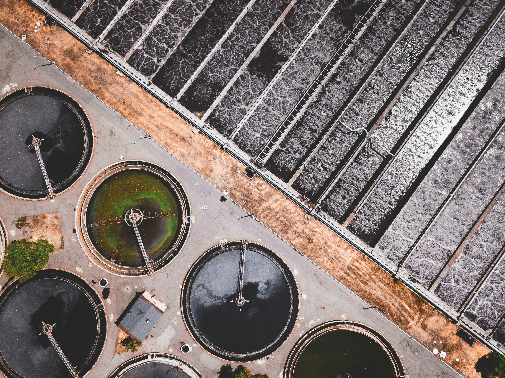
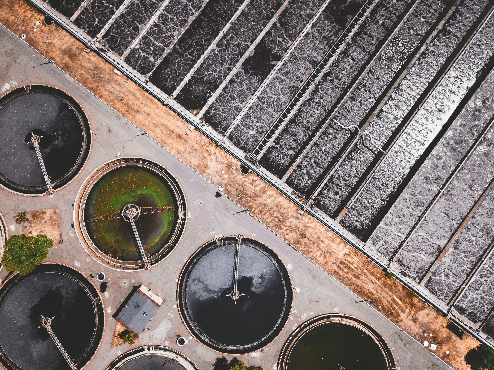
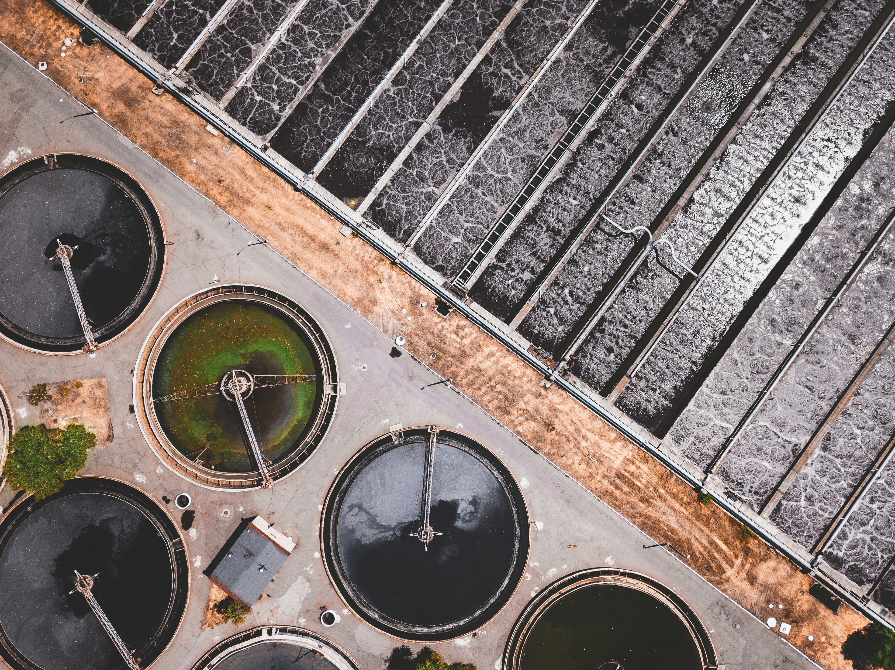
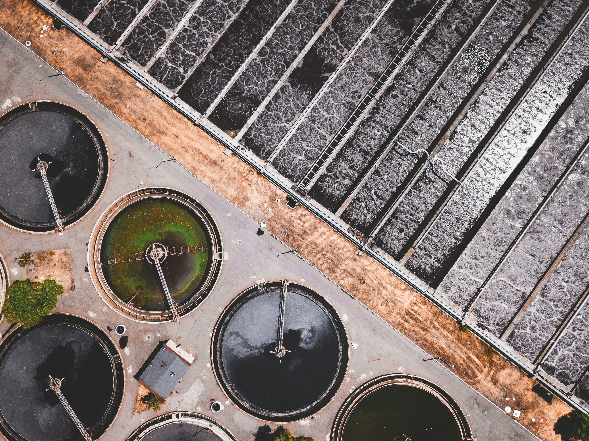

Saneamento Básico

 



O saneamento básico, de maneira geral, compreende serviços não só de coleta e tratamento de esgoto como normalmente imaginamos, mas também de abastecimento de água, limpeza urbana, coleta e destinação do lixo e de outros resíduos sólidos, esgotamento sanitario, além de drenagem e manejo da água das chuvas.
O esgoto a céu aberto,Um lugar que não possui em suas condições um saneamento básico de qualidade tende a desenvolver os seguintes problemas: poluição geral dos mares e dos lençóis freáticos, destruição de biomas e de espécies que vivam em mananciais, degradação de imagem pública, diminuição das condições de vida dos moradores dessas áreas, além do surgimento de diversas doenças. Dentre essas doenças geradas, podemos citar: diarreia por Escherichia Coli, disenteria bacteriana, febre tifoide, cólera, Leptorpirose, Hepatite A, verminoses, Giardiase, entre outros. Isso tanto quanto à contaminação da água quanto à atração de insetos infectados ou outros animais que em contato com o ser humano tragam agravâncias na saúde.
O equivalente a quase 100 milhões de brasileiro não têm acesso ao serviço de coleta de esgoto e somente 49% de todo o esgoto gerado no país passa por algum tipo de tratamento. Vemos os casos de algumas manchetes que estampam os títulos: "Esgoto a céu aberto causa transtornos para moradores e turistas em Fernando de Noronha", "Comunidades do Rio de Janeiro sofrem diariamente com a presença do próprio esgoto à porta de casa", "Tubulação antiga de São Paulo vira inimiga da população no tratamento de esgoto permitindo seu escape pelas ruas da capital", etc.

Como solução para esse problema frequente que se espalha por todo o Brasil, é necessária a implementação de sistemas de coleta e tratamento de esgoto adequados, o que inclui a construção de redes de esgoto, estações de tratamento e a conscientização da população sobre a importância do descarte correto de resíduos. Por enquanto, já temos nossa convivência com o Código de Postura do Município, Lei 266/95 - PMS e com o Código de Proteção ao Meio Ambiente, Lei 831/2009 - PMS, regulamentada pela Lei 6.938/81 e pela Lei 9.605/98.